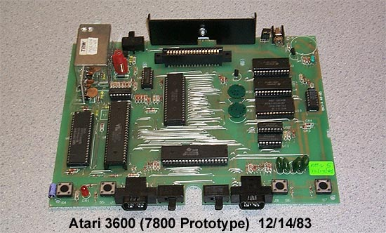

3600 Prototype
Motherboard. PCB Design by
Dan Schwinn formerly
with GCC, Inc.
*Special Note:
Look on the bottom of the original run of
Atari 7800 ProSystem
Motherboards. You will find in the traces
the initials
DJS (Dan J. Schwinn)
The original model # of the Atari 7800 was the Atari 3600.
Marketing then settled on the Atari CX-9000 Video Computer System.
Since the system was originally thought to be the ultimate gaming console,
a high number was chosen. Then during marketing meetings
it was realized that there would be more powerful game consoles down the
road so the model # was reconsidered. It was decided
that the new console would have the model # 7800 (5200 Graphics + 2600
Compatibility = 7800) Since it would utilize the new
line of PRO-LINE controllers, it would be called the PROSystem.
The Atari 7800 PRO System was born.
The original Atari 3600 prototype was going to be a single sided motherboard
to drastically cost reduce the unit from the start to help increase profits.
However, all of the jumpers on the top of the motherboard proved to be
anything but a cut in cost. It would be too costly to assemble
and the single sided PCB was dropped in favor of a new PCB which was double
sided. Many have asked, "why isn't there a POKEY
chip on the motherboard?!?! All the 7800 will do is 2600 type
audio!!!" Well, due to the size of the case (the Atari
7800 case is actually a re-designed version of the Atari 2800.
The re-design was done by Barney Huang) the motheboard of the Atari 7800
was rather small and there was not enough space to accomodate the POKEY
chip into the design. Instead the POKEY chip could be added
into the game cartridges themselves when higher quality sound effects were
needed (Such as the Ball Blazer cartridge with its background music.)